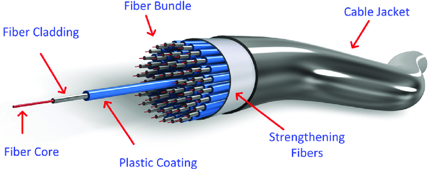
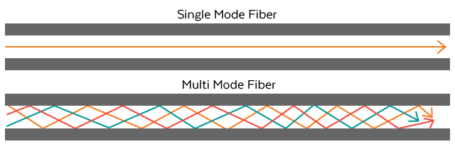

Light waves are used to transmit information using optical signals. Fiber optics are free of crosstalk, EMI, and attenuation. Voice, data, and video transfers are all possible with these lines. Fiber optics are the safest cable media available. Installation and upkeep are time-consuming and expensive. When compared to coaxial and twisted pair cables, fiber optics have faster transmission speeds, higher bandwidth, and the signal may traverse longer distances. Optical cable is less expensive than coaxial and twisted pair cables, but the additional optical components required for installation make it the most expensive of all the cables.
The advantages of optical fibers include the following:
There also are a number of disadvantages, including the following:
Fiber optics can operate in two different modes. Single-mode fibre, for example, uses a single beam of light and permits communication over long distances with faster data transfer. On the other hand, multimode fibre uses numerous light beams within a single fibre cable, has a shorter length and travel speed, and larger bandwidth, but the signal strength is diminished.
